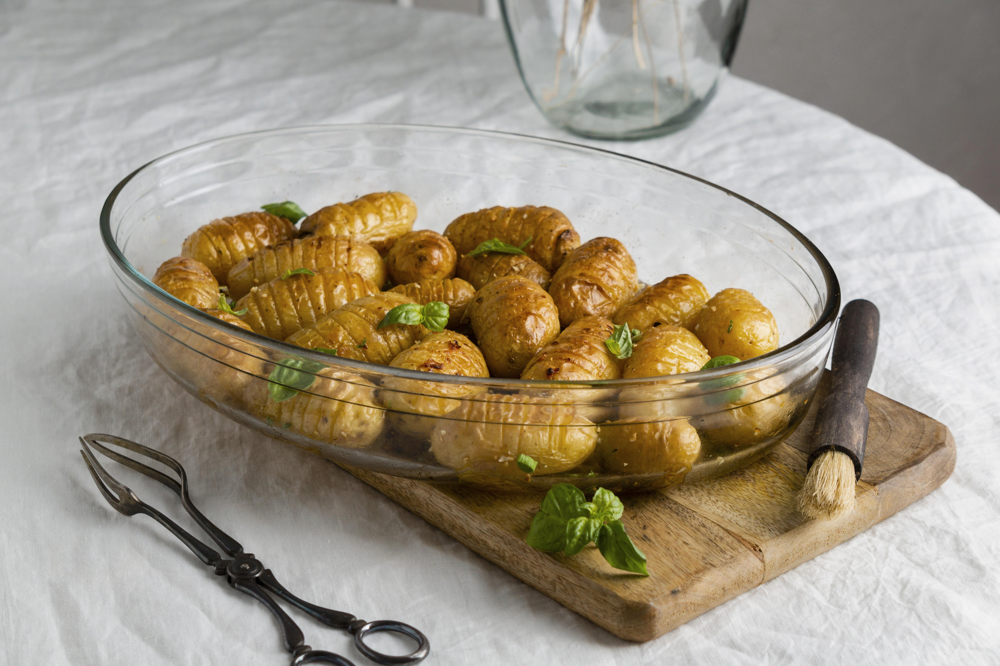

Stuffed Baked Potatoes

Stuffed baked poatoes is a delicous and easy to make recipe. Follow along with the ingridients needed and instruction step by step. Otherwise your potatoes will be bad and not MLG awesome like mine.
Ingredient list
- potatoes
- butter
- salt
- greek yogurt
- leftover cheese
Now its time to cook!!!
- Put the potatoes on a tray and throw in the oven
- Let them burn in the pits of hell for 30 minutes
- After 30 mins pull the tray out and throw it on the table
- Cut the souless potatoes and stuff them with the ingridients listed
Thank you for choosing my repice